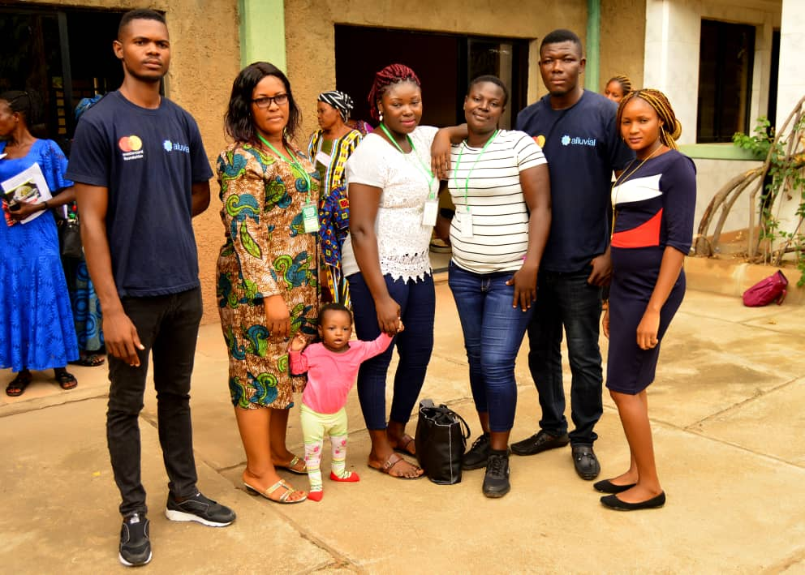

What we do?
Through trainings, webinars, workshops and conferences, we organize and implement activities that are tailored to strengthen the skills needed to develop, manage and evaluate local development strategies. We have developed a unique and highly interactive approach to capacity building, practice-oriented sessions and enable support for developing vibrant community of practices and learning- enhancement tools.
Delivery of trainings in a variety of skills in rural areas is therefore needed to attain sustainable rural livelihoods . In order for a rural population to strive there is need for livelihoods that would sustain and support their households and communities.
Why action is needed
The access to trainings and workshops of the rural inhabitants is often limited mostly by financial barriers (e.g. training and transportation costs) and non-financial barriers (e.g. scarce education and lack of training infrastructures) ~Many rural people in communities do not have basic education. This also hampers their access to technical and vocational training or other skills development. ~Unequal gender relations and traditional gender roles entail specific difficulties for rural girls and women in accessing education and training.
Skills for rural development
Skills are central to improve employability and livelihood opportunities:
Rural livelihoods are becoming diversified:
Developing an integrated approach to rural skills building and development
Worthy of Note
While access to good quality formal training is important, acquisition of non-formal and informal skills training is also key to improving skills provision in rural areas.
We facilitate the upgrading of skills for increased agricultural productivity
We initiate diversified skills development systems
Development of skills in rural areas often require different skills provision, Institution-based education that can be combined with enterprise-based learning. Technical combined with entrepreneurship training
Developing and upgrading skills in the informal economy
Skills Building
Local leaders need to build the capacities needed to make their communities more inclusive, sustainable and resilient.
Livelihoods
Small-scale farming, fishing, raising livestock and non-farm activities
are some of the common livelihoods that these communities survive on.
Rural livelihoods are on the brink and poses a great challenge as these
populations are often in a state of poverty where they lack the basic
necessities for survival.
Resent Articles
Call Us:
07084113246
Follow Us: